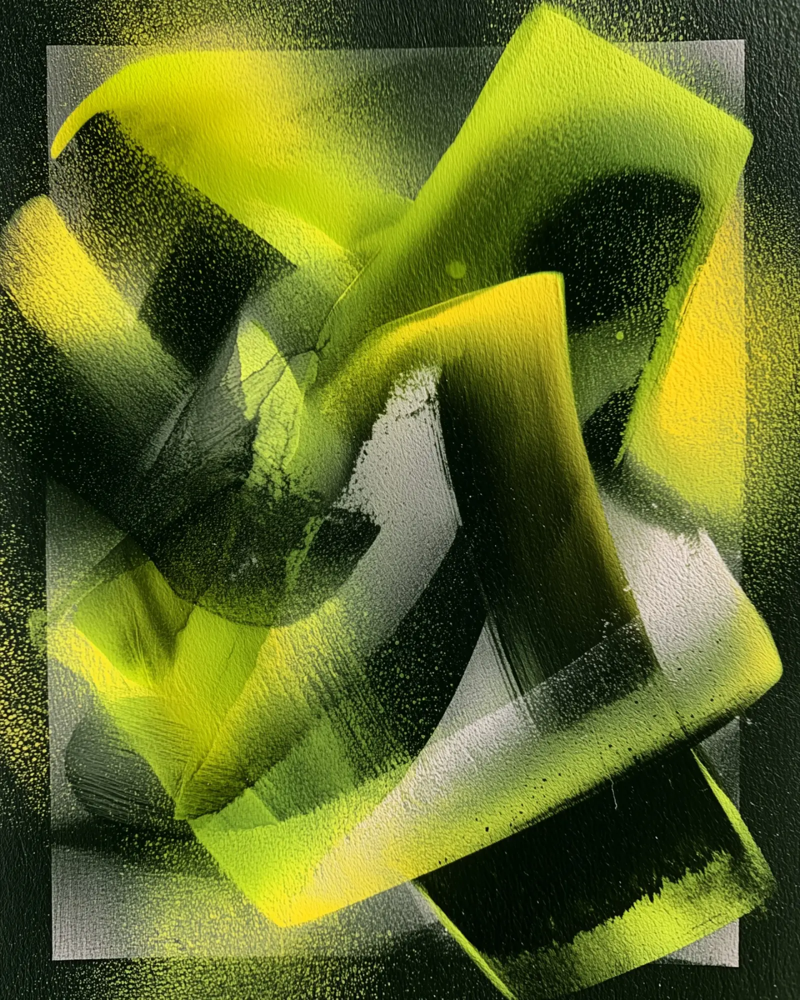
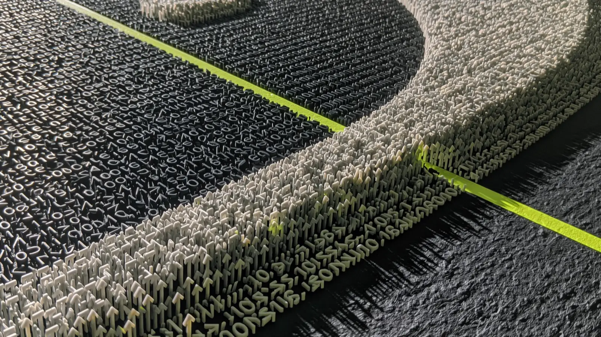
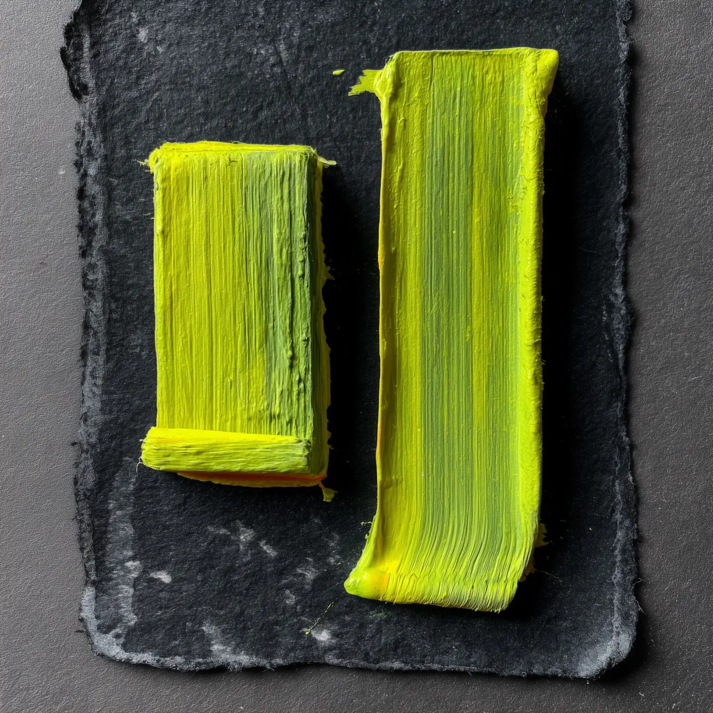

Birigui, 16 de novembro de 2026 · confidencial
// remedição competitiva em inteligência artificial
DCS Diagnósticos por Imagem · Birigui e Araçatuba. As mesmas perguntas de 15/10, feitas de novo ao ChatGPT, Claude, Gemini e Perplexity.
// como medimos
70
perguntas idênticas às de 15/10
4
IAs, nas mesmas versões de outubro
200
respostas válidas de 200
112
pares comparáveis no placar principal
O placar principal usa só perguntas de quem está procurando onde fazer exame, sem citar nenhuma clínica pelo nome. É assim que um paciente novo pergunta: pela necessidade, não pela marca.
Recomendação só conta quando a IA indica a clínica de forma explícita. Aparecer numa lista é menção. Só comparamos a mesma pergunta, na mesma IA, nas duas datas.
// quem as IAs recomendam
| Clínica | Recomendada 15/10 | Recomendada 16/11 | |
|---|---|---|---|
| DCS | 39 de 112 | 37 de 112 · 33% | |
| CAMF | 26 | 27 · 24% | |
| Tomoson | 20 | 21 · 19% | |
| CDI Araçatuba | 12 | 16 · 14% | |
| IMNB | 5 | 6 · 5% |
A DCS aparece em 83 das 112 respostas (74%) e é recomendada em 37. Em outubro eram 89 e 39. Diferenças de duas ou três respostas ficam dentro da oscilação normal das IAs: o quadro geral é de estabilidade, com a liderança mantida.

// araçatuba
| Recomendada em 56 respostas | 15/10 | 16/11 |
|---|---|---|
| CAMF | 26 | 27 |
| DCS | 20 | 23 ▲ |
| Tomoson | 13 | 18 ▲ |
| CDI Araçatuba | 12 | 16 ▲ |
A distância para a líder caiu de 6 para 4 respostas. Mas Tomoson e CDI cresceram mais rápido que a DCS. Na pergunta sobre ressonância de campo aberto, a DCS foi recomendada por ChatGPT, Gemini e Perplexity.
// birigui
Menção da DCS
48 de 56
eram 53 em outubro. Ainda presente em 86% das respostas.
Recomendação da DCS
14 de 56
eram 19. É a queda mais relevante desta medição.
Concorrência local
IMNB recomendado em 6 (eram 5). Tomoson em 3 (eram 7). Nenhum concorrente chega perto da DCS em Birigui.
As IAs continuam falando da DCS em Birigui. O que diminuiu foi a indicação explícita ("recomendo a DCS"), e ela caiu principalmente no Claude.
// cada ia tem sua leitura
| IA | DCS recomendada (de 28) | DCS mencionada (de 28) | Leitura |
|---|---|---|---|
| ChatGPT | 4 → 6 | 19 → 22 | melhorou |
| Perplexity | 10 → 13 | 23 → 21 | melhorou |
| Gemini | 13 → 13 | 25 → 27 | estável |
| Claude | 12 → 5 | 22 → 13 | caiu |
O ChatGPT, ponto mais fraco em outubro, avançou. No Claude, a CAMF passou a ser a mais recomendada (de 7 para 11), e a DCS saiu de 12 para 5.

// o sinal por trás do número
| Respostas que citam dcs.med.br como fonte (de 30) | 15/10 | 16/11 |
|---|---|---|
| Gemini | 26 | 30 ▲ |
| Perplexity | 22 | 12 ▼ |
| Claude | 23 | 11 ▼ |
No Claude, a queda é quase toda em Araçatuba: o site da DCS foi fonte em 9 de 14 respostas em outubro e em 1 de 14 agora, e a recomendação foi de 5 para 1. Uma das respostas chegou a dizer que outra clínica tem "a única ressonância de campo aberto da região". O Perplexity é um caso diferente: trocou o site por diretórios, mas passou a recomendar mais a DCS.
O site está no ar e liberado para as IAs (conferido em 16/11). Quando a IA não lê a DCS, ela não recomenda a DCS.
// como ler estes números
Dá para afirmar
A DCS mantém a liderança somando as duas praças.
Em Araçatuba, a distância para a CAMF diminuiu.
ChatGPT e Perplexity indicam mais a DCS do que em outubro.
Ainda não dá para afirmar
Que houve crescimento geral: o total ficou estável.
Que uma ação específica causou cada variação.
Que o resultado de um dia vale para o mês inteiro: cada IA foi consultada uma vez por pergunta.
Medição de laboratório, por API, com busca na web ligada em todas as IAs. O aplicativo que o paciente usa no celular pode responder de forma diferente. As respostas completas ficam arquivadas e podem ser consultadas.
// o que fazemos agora
01 · campo aberto
Deixar explícito na página inicial e na página de Araçatuba que a DCS tem ressonância de campo aberto em Araçatuba, com o modelo do aparelho e para quem ela é indicada.
02 · provas
As IAs recomendam CAMF por "desde 2000", Tomoson por "3T", CDI por "ISO 9001". A DCS precisa publicar fatos verificáveis do mesmo tipo e reunir avaliações de pacientes.
03 · diretórios
Completar as fichas nos guias que as IAs passaram a ler, como Doctoralia e Solutudo, com os mesmos dados do site.
04 · cadastros
Corrigir dados errados que circulam: um endereço antigo de CNPJ citado pelo ChatGPT, uma ficha que classifica a DCS como laboratório e mamografia atribuída à unidade de Araçatuba.
05 · páginas de exame
Fazer as páginas de cada exame chegarem às IAs. Hoje, Claude e Perplexity quase só leem a página inicial.
06 · o que falta
Criar páginas para convênios por cidade e para ultrassom em Araçatuba, perguntas em que nenhuma página da DCS aparece hoje.
Sem mexer no que funciona: no Gemini o site da DCS foi fonte em 30 de 30 respostas, então os endereços atuais das páginas ficam como estão. Próxima remedição com a mesma régua em dezembro, para separar tendência de oscilação.
// citável
Relatório de remedição competitiva · 16/11/2026 · comparado à medição de 15/10/2026
CITÁVEL · reputação de marcas em IA · Grupo Desigual